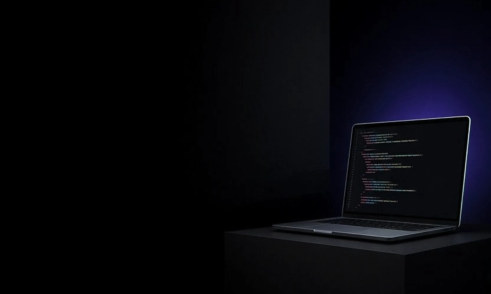

OrbitLa gestion de projet, sans friction.
Full-StackUn espace de travail qui transforme le chaos des tâches en une vision claire. Moins de clics, plus de progrès.

Développeur web indépendant. Je transforme vos idées
en expériences digitales aussi belles que performantes.
UNE SÉLECTION, PAS UNE COLLECTION
Des idées devenues des expériences. Voici quelques-unes des miennes.
Un espace de travail qui transforme le chaos des tâches en une vision claire. Moins de clics, plus de progrès.
Une boutique de mobilier où le design rencontre la performance. Une expérience d’achat simple et inspirante.
Des indicateurs complexes, enfin lisibles. Un dashboard analytique pour prendre les bonnes décisions.
Un site éditorial pour explorer autrement. De grandes images, une navigation fluide et l’envie de partir.
4 projets affichés.
LES BONS OUTILS, LES BONNES BASES
Une stack moderne, choisie pour sa fiabilité. Pas pour suivre les tendances.
Des interfaces qui donnent envie de rester.
Une base solide, pensée pour évoluer.
Le bon workflow, du premier commit à la prod.
Un code propre. Une expérience accessible. Et le souci du détail, partout.
+LA PERSONNE DERRIÈRE LE CODE
Moi, c’est Hypolyte. J’aime les choses bien pensées,
les problèmes intéressants et le travail bien fait.
Depuis 4 ans, j’accompagne les marques, les entrepreneurs et les équipes qui veulent faire les choses autrement. Mon terrain de jeu : le point de rencontre entre le design et le développement.
Je crois aux échanges simples, aux choix techniques justes et aux solutions qui durent. Pas de jargon inutile : on avance ensemble, du premier croquis à la mise en ligne.
UNE MÉTHODE SIMPLE.
RIEN LAISSÉ AU HASARD.
Votre vision, vos enjeux, vos utilisateurs.
L’essentiel, avec intention et précision.
Du code solide, testé et prêt à évoluer.
ET MAINTENANT, VOTRE IDÉE.
Un projet en tête, une question, ou simplement envie
d’échanger ? La conversation commence ici.